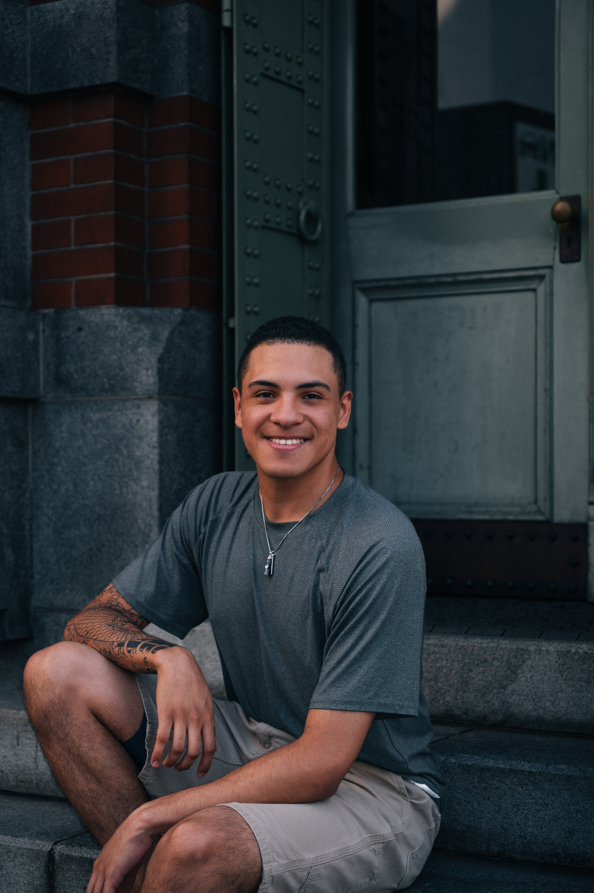

Daniel Higareda Leon

Summary
Dedicated hardworking Mexican-American man living in Japan. Great
communicator and has years of experience speaking with customers.
Education
General Education - Santa Rosa Junior College (2019-2020)
Work Experience
-
Web Developer / Front Desk - Fukuoka City's Engineer Cafe
February 2023 - Present
-
Managed front desk operations, including customer inquiries and
reservations.
-
Organized and facilitated tech-related events, with a focus on web
development.
-
Assisted beginners in learning HTML, CSS, and JavaScript or anything
related to web development.
-
Collaborated with a team to create a welcoming and educational
environment.
Skills
- Fluent in both English and Spanish
- Holds JLPT N3 (Daily Japanese)
- Great with customers
- Good at communication
- Great leader and planner
© Daniel Higareda Leon. All rights reserved.